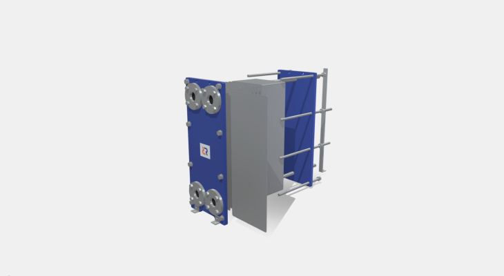
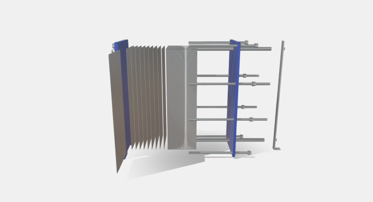

Интерактивная модель ПТО
Взаимодействуте с 3D моделью пластинчатого теплообменника, чтобы подробнее ознакомиться со всеми характеристиками оборудования Ридан.
Как пользоваться 3D моделью
Просматривайте теплообменник в 3D
Зажмите и переместите курсор мыши для вращения или вращайте модель при помощи пальцев на мобильном устройстве
Откройте теплообменник для более подробной информации
Нажмите на теплообменник мышью или пальцем на мобильном устройстве, чтобы развернуть или свернуть конструкцию теплообменника
Узнайте больше об основных характеристиках теплообменника
Нажмите на индикаторы характеристик с цифрами для отображения подробной информации
Интерактивная 3D модель представляет собой реалистичную визуализацию пластинчатого теплообменника Ридан и включает себя информационные индикаторы для более детального знакомства с характеристиками оборудования, такими как материал пластин, прокладок, фланцев и втулок, рабочих и максимальных параметров.

